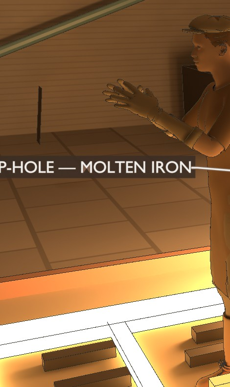
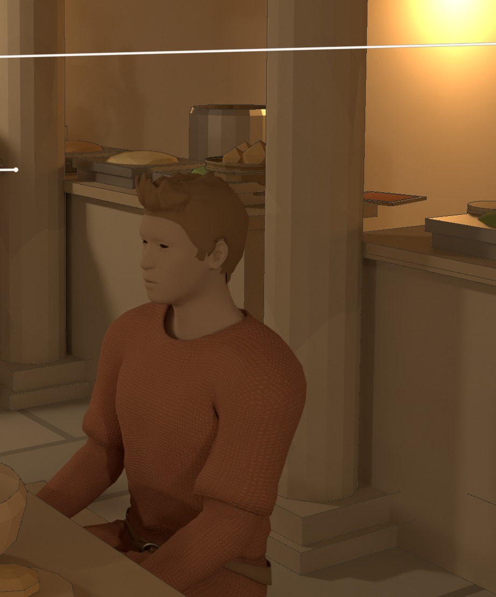
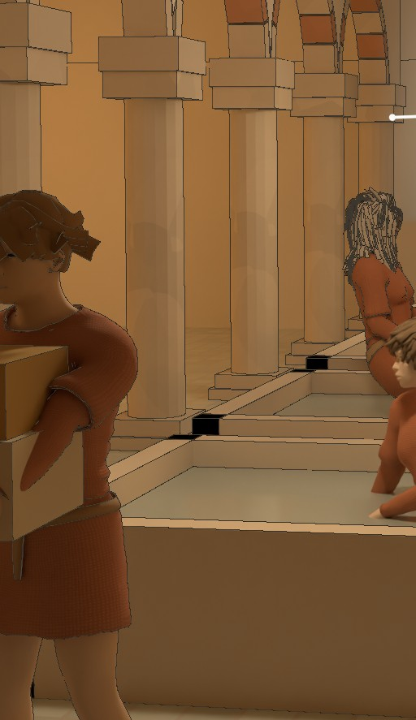
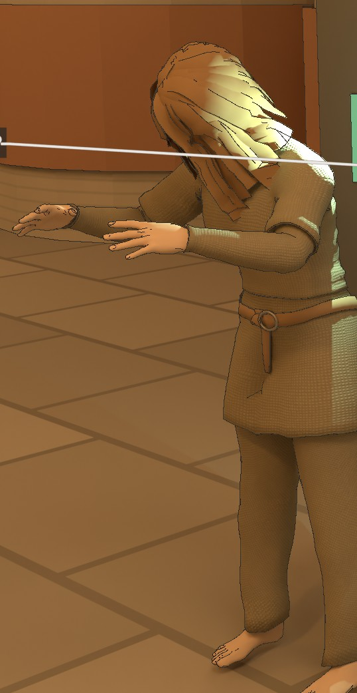
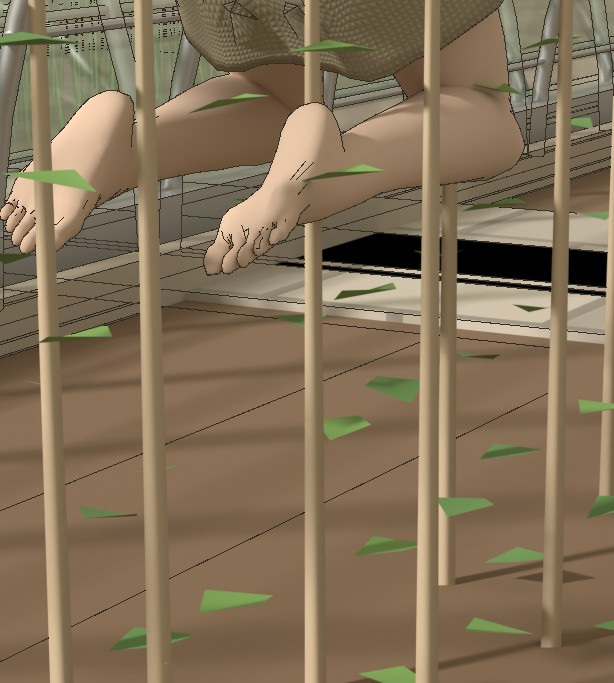

Meeting the Lineages
The settlement organises itself not by class or party but by line — a founder-surname that became, over the generations, a craft, a body of guarded know-how, and an address in the Book. You marry out of your line; you inherit your craft within it. A weaver’s child weaves; a smith’s child smiths; and the dye-recipes, the furnace timings, the bearing-tolerances live in no manual but in the family’s hands, which is why the death of a master is a loss felt well beyond the household.
These are the lines that feature in the plates of this volume — by no means all of them, only the ones we have met so far — gathered here by the standing their craft carries. Some hold the bureaus and the records; some keep the air, the copper, the glass, the machines, and the body; most are the broad craft middle that cooks, weaves, grows, and builds; and some do the hauling, the mining, and the wet, cramped work the rest depend on. How they hold together — who allies with whom, where the real power sits — is a larger question than a picture-book can answer, and is left for another volume.
Portraits A few faces from the plates






I The patrician lines — the bureau-holders
↑ IndexThe lines that hold the settlement’s bureaus — agriculture, stores, labour, construction, the Register, ritual, justice. Theirs is administrative knowledge, kept within the family: how an allocation is actually made, where the margins of discretion lie.
- Clarke the Register — scribes and custodians of the sacred Bookpatrician
- Keepers of the genealogy that decides who may pair with whom. Clean hands kept for the work, the finest blue-black dye, a discreet copper shoulder-pin. What the Register says, was.
- Okonkwo the stores bureau — allocationpatrician
- A wealthy, long-tenured line that has held stores for generations; their lineage hall is the one place electric light is spent on display. Stores remembers — a half-threat about who got what.
- Kovač the labour bureau — corvée and the work-rosterpatrician
- Keepers of the corvée tally and the long memory of who owes days. A ‘smith’ name that took the administration of labour rather than the forge.
- Adebayo the construction bureau — block and tunnel expansionpatrician
- Reads a wall the way the cook reads an appetite; holds the growth-front decisions — where the next block opens, and when.
- Halvorsen the agriculture bureau — crop priority over the greenhouse linespatrician
- A research-agronomy origin turned growing authority; sets what is planted where, though the growing itself is the Lindqvists’ craft.
- Sandoval the ritual bureau — calendar, founding-narrative, legitimationpatrician
- Keeper of the calendar and the founding story; the softest power in the settlement, and the most archaic speech.
- Brandt the justice bureau — adjudicationpatrician
- Holds the adjudicator’s bench at the junction chamber. The heaviest word in the line’s keeping is the euphemism for exposure.
II The independent guild — outside the bureaus
↑ IndexOne line stands apart from the bureaus: the atmosphere guild, which keeps the air and takes its apprentices across the lines rather than by birth alone.
- Reyes the atmosphere guild — the Watch, gas-processing, the monitor’s roundindependent guild
- Public readings and cross-line apprenticeship. The round as liturgy — same route, same Davy-lamp reading, same call into the speaking tube, twice a day for a career; the detector-bird carried along. Clock-keeping is a specialty within the line.
III The high crafts — prestige without a bureau
↑ IndexCopper, fire, breath, and the body pass through these hands. They rarely hold a seat, but the colony cannot do without them, and they know it.
- Faber iron & smithing — the central ironworkscraft-high
- The forge-smell and the burn-scars as identity; the buckles they forge become lineage heirlooms, handed down a grandparent at a time.
- Maier precision machine shops — turbine, pump, fan, compressor fitterscraft-high
- Hand-fits a bearing surface to a thousandth by feel; will not let an apprentice touch the master gauge for three years. A skill that lives in the hands and nowhere else — if the Maiers forget it, it’s gone.
- Larsson copper-working — wire-drawing, motor and generator windings, fittingscraft-high
- Copper passes through their hands and they issue it, every winding accounted. Green verdigris-stained fingers that never quite clean.
- Haas glassmaking — the greenhouse panels and the bead glasscraft-high
- Reads furnace colour by eye; the glass-temperature timings are the family secret, a textbook case of craft that lives in no manual. A green-and-amber bead strand is a Haas calling-card.
- Ferreira medicine, midwifery & pharmacy — including the pig-pancreas insulincraft-high
- At every birth before the Registrar’s pen; keeps the pharmacopoeia in the head and the insulin timings in the hand. The one line allowed at both the bed and the Register’s edge.
IV The middle crafts — the everyday economy
↑ IndexIndispensable, respectable, unranked: the broad craft middle that cooks, weaves, grows, builds, and keeps the settlement furnished and fed.
- Boulanger the cookshops — the kitchen nodescraft-middle
- Socially central: the cook is witness, mediator, and intelligence service, and knows who is sick, who feuds, who has started sharing a bench. The cook knows.
- Tanaka milling — grain and the dressed stonecraft-middle
- Gloved against the dust; keeps the stones dressed and the meal consistent. The matriarch is the one invited to mediate.
- Lindqvist the greenhouse — growingcraft-middle
- The greenhouse-smell of soil and growth as craft identity; the lightest dress under the glass. They hold the crop timings no bureau has ever managed to write down. Beekeeping is a veiled hereditary specialty within the line.
- Whitfield textile — loom & clothcraft-middle
- Even is the line’s word of praise — for thread and for people alike. Keepers of the heirloom tapestry, woven a hand’s-breadth a week.
- Achebe textile trade — the cloth-trader counterpart to the loomcraft-middle
- Barters bolts at the Cross stalls; the traders who carry cloth from the looms to the rest of the settlement.
- Potter ceramics — tableware, storage jars, the fired-clay beadscraft-middle
- Their goods are everywhere, their standing middling; ochre and umber dye worked permanently into the hands.
- Haddad the baths & water-servicecraft-middle
- Discretion is the craft — what is said undressed in the warm water is never repeated. The bath as the kitchen’s social opposite.
- Mason masonry & the arch-craft — every vault and doorwaycraft-middle
- The arch is honest — it stands or it doesn’t. Sets the keystone of a new block’s vault as a line ritual; chalk-white dust in the creases.
- Bauer glazier & frame crews — setting the panels and the 70 kPa sealcraft-middle
- Suited surface work that reads as construction-caste; gasket-grease worked permanently into the gloves. The seal holds or the crop dies.
- Schiff tunnel & junction fabrication and the integrity watchcraft-middle
- The spine has no redundancy and the Schiffs know it: a sober, checking temperament that taps every weld and reads condensation like weather.
- Garnier rope, oil, soap & candle — the combined consumables linecraft-middle
- They smell of linseed oil, and so, faintly, does everywhere they supply; theirs is the lamp oil that lights the Davy lamps and the corridors.
- Weber furniture & joinery — steel-frame, woven-fibre, bamboo-grasscraft-middle
- There is no wood, so we make the wood. Builds the pairing-chest that becomes the most personal heirloom a household owns.
V The book crafts — the literate sub-economy
↑ IndexThe Register’s primacy pulls a small cluster of literate crafts into being around it — distinct from the Clarke scribes, these make the material and print the notices.
- Müller papermaking & bookbinding — rag-paper from textile wastecraft-middle
- Takes the Whitfields’ and Achebes’ worn cloth and returns it as paper; binds the volumes the Register lives in. The Register is only as old as our binding lets it be.
- Drucker printing & typecasting — the notice-press and the Register formscraft-middle
- Casts type from the Larssons’ rationed metal — the one place lead is spent; ink from Garnier oil and lamp-soot. Sets the formulaic life-event forms the Registrar reads aloud.
VI The indispensable-low lines — and what is left to corvée
↑ IndexIndispensable and well-tenured, but kept socially at arm’s length — by smell, by cold, or by the dread of the work. Much of the settlement’s hardest work falls to them, and the rest of it looks past them.
- Okafor pumps, fans & tunnel machineryindispensable-low · but skilled
- Pump fails, the waste backs into the blocks — the whole colony’s quiet debt. Tool-tote and stained knees; works hand-in-glove with the Maiers and Schiffs, which is why everyone is polite to the Okafors.
- Petrov haulage — carts, sacks, the rail draisinesindispensable-low
- Hemp-and-red low-dye work tunic, the lowest craft-dress; corvée-heavy. They move everything the settlement eats, builds, and discards, and are thanked for none of it.
- Renner underfloor irrigation & water-reclamation — the crawlway crewsindispensable-low
- The wettest, most cramped craft in the colony, the rotation everyone dreads; the close cap and the soil-drip smell from above. We hold the ceiling up with our backs.
- Voss ice-mining & water processing — the permafrost faceindispensable-low
- Suited cold-work at the ice face, the source of every drop in the closed loop. The planet keeps the water and we take it back.
- Diallo mining — iron, copper ore, regolithindispensable-low · deep tenure
- The founding extraction workforce — deep tenure and a strong in-group identity; an old gallows-vocabulary, ore-dust ground into the skin. The base mined to survive, and we are the base.
- Schäfer pig & animal husbandry — food, leather, and the pharmaceutical pancreasindispensable-low
- The only animal-smell line; supplies Ferreira’s insulin pancreases and the colony’s scarce leather. We raise the cure and the dinner both.
Index All the lines
Clarke · Okonkwo · Kovač · Adebayo · Halvorsen · Sandoval · Brandt · Reyes · Faber · Maier · Larsson · Haas · Ferreira · Boulanger · Tanaka · Lindqvist · Whitfield · Achebe · Potter · Haddad · Mason · Bauer · Schiff · Garnier · Weber · Müller · Drucker · Okafor · Petrov · Renner · Voss · Diallo · Schäfer